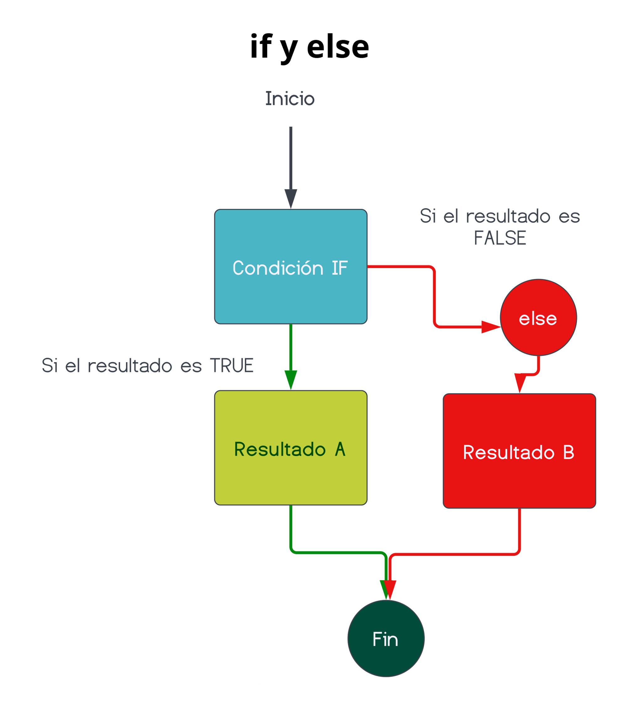

Fundamentos de
programación con R
Track: Estadística y programación con R
2022-3
Irwing S. Saldaña
Programación funcional y graficación estadística
Clase 3
Sección 5: Esenciales de programación funcional
5.1. Creación de funciones
R es un lenguaje orientado a objetos: creamos variables, las modificamos y operamos con ellas. Pero además, R tiene muy buen soporte de sintaxis para crear funciones. Se podría decir que es un lenguaje polifacético y adecuado para investigación en ciencias.
- Para crear funciones se usa la función
function()con la siguiente sintaxis:
5.1. Creación de funciones
Los argumentos le brindan la información que al función procesará. Aquí debes saber que las {} las usaremos solo en funciones con más de una línea de código. Creemos una función para elevar un número a una potencia dada:
5.1. Creación de funciones
Además, puedes establecer argumentos con valores por defecto.
5.1. Creación de funciones
Es importante comentar una función, principalmente las que cuentan con muchas líneas de código. Esto le dará legibilidad a tu código.
5.1. Creación de funciones
Puedes incluso crear variables temporales dentro de las funciones para realizar operaciones más complejas. Pidamos que la función nos devuelva el valor dividido entre pi.
5.1. Creación de funciones
Es una buena práctica usar print() para imprimir un resultado.
5.1. Creación de funciones
Finalmente, puedes personalizar el resultado impreso en consola con cat().
# Personaliza la salida de la función
elevP <- function(numero, potencia = 2) {
# Esta es una función importante
resultado_intermedio <- numero^potencia
resultado_final <- resultado_intermedio/pi
cat("El número", numero, "elevado a la potencia",
potencia, "y dividido entre pi es:", resultado_final, "\n")
}5.2. Fundamentos de control de flujo con if y else
5.2. Fundamentos de control de flujo con if y else
Para definir qué sucederá cuando la condición lógica en if sea falsa, usamos else. Entonces, cuando if sea falso, else mostrará su contenido.

5.2. Fundamentos de control de flujo con if y else
Apliquemos lo aprendido. Crea una función que (1) calcule el área de un círculo y (2) te muestre el resultado siempre y cuando este valor, redondeado a número entero, sea par. (3) Si es impar, mostrar un texto cualquiera. ¡Hey! primero elabora el pseudocódigo y luego conviértelo en código.
5.2. Fundamentos de control de flujo con if y else
Apliquemos lo aprendido. Crea una función que (1) calcule el área de un círculo y (2) te muestre el resultado siempre y cuando este valor, redondeado a número entero, sea par. (3) Si es impar, mostrar un texto cualquiera. ¡Hey! primero elabora el pseudocódigo y luego conviértelo en código.
5.2. Fundamentos de control de flujo con if y else
5.2. Fundamentos de control de flujo con if y else
Estos dos operadores de control de flujo también sirve como interruptores dentro de funciones para que se ejecute una u otra cosa dependiendo si colocamos TRUE o FALSE en un argumento dado.
# "modo.serio" para producir una respuesta formal e informal
areaModo <- function(radio, modo.serio = TRUE){
area <- pi*radio^2
area_r <- round(area)
if(area_r %% 2 == 0) {
return(area)
} else if(modo.serio == TRUE) {
return("El resultado generado no es par, lo sentimos")
} else if(modo.serio == FALSE) {
return("Nahh! mala suerte, no es par")
}
}5.2. Fundamentos de control de flujo con if y else
Estos dos operadores de control de flujo también sirve como interruptores dentro de funciones para que se ejecute una u otra cosa dependiendo si colocamos TRUE o FALSE en un argumento dado.
5.3. Ciclo for (loop for)
Además de controlar el flujo de las respuestas del código, es importante conocer cómo se realizan automatizaciones de procesos con ciclos. El ciclo for no es el único que existe, pero sí el primero que debes conocer.
5.3. Ciclo for (loop for)
Reto: ¿Cómo harías para evaluar los números enteros entre 1 y 30 con la función areaCirculo()? ¡Hey! primero elabora el pseudocódigo y luego conviértelo en código.
5.3. Ciclo for (loop for)
Reto: ¿Cómo harías para evaluar los números enteros entre 1 y 30 con la función areaCirculo()? ¡Hey! primero elabora el pseudocódigo y luego conviértelo en código.
r = 1 ; área = No es par, so sad
r = 2 ; área = No es par, so sad
r = 3 ; área = 28.27433
r = 4 ; área = 50.26548
r = 5 ; área = No es par, so sad
r = 6 ; área = No es par, so sad
r = 7 ; área = 153.938
r = 8 ; área = No es par, so sad
r = 9 ; área = 254.469
r = 10 ; área = 314.1593
r = 11 ; área = 380.1327
r = 12 ; área = 452.3893
r = 13 ; área = No es par, so sad
r = 14 ; área = 615.7522
r = 15 ; área = No es par, so sad
r = 16 ; área = 804.2477
r = 17 ; área = 907.9203
r = 18 ; área = 1017.876
r = 19 ; área = 1134.115
r = 20 ; área = No es par, so sad
r = 21 ; área = No es par, so sad
r = 22 ; área = No es par, so sad
r = 23 ; área = 1661.903
r = 24 ; área = 1809.557
r = 25 ; área = No es par, so sad
r = 26 ; área = 2123.717
r = 27 ; área = 2290.221
r = 28 ; área = No es par, so sad
r = 29 ; área = 2642.079
r = 30 ; área = No es par, so sad 5.3. Ciclo for (loop for)
Otro reto: ¿cómo harías para que solo muestre los valores numéricos y se salte la impresión de “No es par, so sad”? ¡Hey! primero elabora el pseudocódigo y luego conviértelo en código.
5.3. Ciclo for (loop for)
Otro reto: ¿cómo harías para que solo muestre los valores numéricos y se salte la impresión de “No es par, so sad”?. ¡Hey! primero elabora el pseudocódigo y luego conviértelo en código.
Sección 6: Fundamentos de graficación con ggplot2
6.1. El famoso ggplot2
A la librería ggplot2 se le reconoce como la mejor para elaborar gráficos estadísticos. El prefijo gg proviene de gramática de gráficos. Con una sintaxis simple e intuitiva podrás elaborar gráficos estadísticos de nivel profesional.

6.1. El famoso ggplot2
Con ggplot2 sumamos capas en el gráfico resultante. Una versión simplificada de su código sería:
6.1. El famoso ggplot2
Con ggplot2 sumamos capas en el gráfico resultante. Una versión simplificada de su código sería:
6.1. El famoso ggplot2
Con ggplot2 sumamos capas en el gráfico resultante. Una versión simplificada de su código sería:
6.1. El famoso ggplot2
Con ggplot2 sumamos capas en el gráfico resultante. Una versión simplificada de su código sería:
6.1. El famoso ggplot2
Con ggplot2 sumamos capas en el gráfico resultante. Una versión simplificada de su código sería:
6.1. El famoso ggplot2
Con ggplot2 sumamos capas en el gráfico resultante. Una versión simplificada de su código sería:
# Activación del "universo ordenado"
library(tidyverse)
# Sintáxis ggplot2
ggplot(data = DF, # base de datos
mapping = aes(x, y, ...)) + # estéticas
geom_... + # geométricas a graficar
scale_... + # funciones que modifican las estéticas
theme() + # modificadores de estilo
otras funciones adicionales6.2. Gráficos de dispersión de puntos
Piensa en la relación de dos variables numéricas. Tomemos las columnas 1 y 2 de la base de datos airquality.
6.2. Gráficos de dispersión de puntos
La mejor forma de representar esta relación sería con un scatterplot o gráfico de dispersión de puntos.
6.2. Gráficos de dispersión de puntos
6.2. Gráficos de dispersión de puntos
6.2. Gráficos de dispersión de puntos
6.2. Gráficos de dispersión de puntos
Otras estéticas importantes son las de color y rellenado en base a un factor.
6.2. Gráficos de dispersión de puntos
# coloca funciones adicionales
G1 <- ggplot(data = airquality, aes(x=Ozone, y=Solar.R,
color=factor(Month),
fill=factor(Month))) +
geom_point()+
geom_smooth(method="lm", se=FALSE)+
ggstatsplot::theme_ggstatsplot()+
labs(x="Ozono (ppm)", y="Radiación solar",
color="Mes", fill="Mes")+
facet_wrap(~Month)
G16.3. Funsión de densidad
En caso de no necesitar relacionar dos variables, una de las mejores maneras de visualizar una sola variable numérica es utilizando un gráfico con su función de densidad density plots. Nosotros le ofrecemos el eje X y la geométrica produce el eje Y. Trabajemos con la temperatura por mes.
6.4. Gráficos de barras
Las variables categóricas no pueden ser evaluadas ni con scatterplots ni density plots. Para ellas, un gráfico de barras es lo más adecuado. Mostrará la frecuencia de cada categoría como altura de sus respectivas barras.
Estos fueron los fundamentos de programación que R que necesitas. Estás lista(o) para elCourse Wrap Up! y unificar lo aprendido en un problema a resolver que te dejará una útil función para explorar tu data.
6.5. Agrupar gráficos de ggplot2
Hay muchas maneras de agrupar gráficos. Una opción simple la facilita ggarrange() de la librería ggpubr.
6.5. Agrupar gráficos de ggplot2
Hay muchas maneras de agrupar gráficos. Una opción simple la facilita ggarrange() de la librería ggpubr.

Course Wrap Up: ¡reto final!

Fundamentos de R